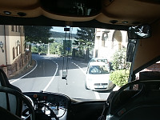
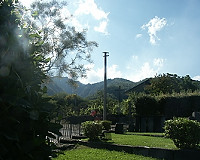
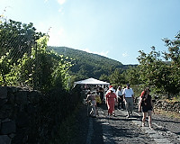
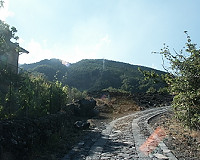
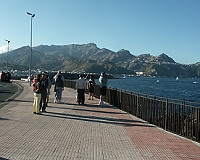
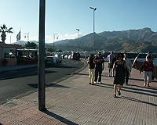
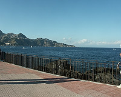
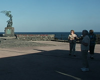
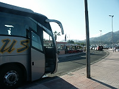

|

The most exciting part of this tour- the driver's driving |

A park in one of the villages we passed through |

Lava flow from a Mt. Etna eruption made into a road. |

Another view of the lava flow. |

The Madonna statue that is said to have saved a village from a lava flow. |

A photo op stop |

|

|
|

Statue was not identified by the guide. |

Our bus |